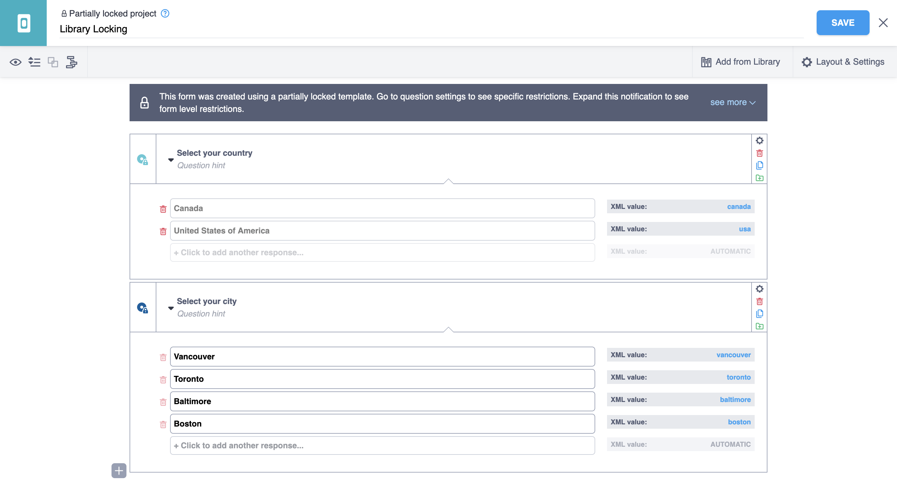

Search the knowledge base, browse our resources, and visit our forum for more detailed information
Read in English | Leer en español | اقرأ باللغة العربية Dernière mise à jour : 30 Sep 2025
Le « verrouillage de bibliothèque » fait référence à la fonctionnalité permettant de « verrouiller » divers aspects d’une enquête lorsqu’elle est créée à partir d’un modèle contenant des attributs de verrouillage. Tous les aspects de l’édition d’un formulaire peuvent être verrouillés grâce à l’attribution de « profils de verrouillage » au niveau du formulaire, de la question ou du groupe. Ces profils de verrouillage peuvent se voir attribuer des « restrictions » granulaires qui regroupent les fonctionnalités de verrouillage. Alternativement, le formulaire peut être entièrement verrouillé, empêchant tous les aspects de l’édition.
Actuellement, seul le verrouillage défini dans le XLSForm lui-même est pris en charge, mais il sera intégré à l'interface de création de formulaires à un moment donné dans le futur.
Cette fonctionnalité peut être utile dans un contexte d’équipe importante et distribuée où un modèle standard est utilisé, avec certaines fonctionnalités verrouillées, et chaque équipe peut effectuer les ajustements locaux nécessaires à ses besoins. Le créateur du modèle peut continuer à effectuer des mises à jour, mais les verrous restreindront les modifications à des aspects spécifiés du formulaire pour ceux qui créent un projet basé sur le modèle.
Le verrouillage d'aspects d'un formulaire est distinct de la gestion des autorisations de projet.
Il existe trois niveaux de restrictions qui peuvent être définis :
Groupe, et
De plus, il existe un booléen kobo--lock_all qui peut être défini dans la feuille settings et qui rendra l’enquête complètement verrouillée.
kobo--lock_all¶Si kobo--lock_all est défini sur True, alors toutes les restrictions granulaires supplémentaires sont redondantes car le formulaire est entièrement verrouillé. S’il est défini sur False ou omis de la feuille settings, alors les profils de verrouillage définis peuvent être utilisés pour contrôler le comportement verrouillé :
feuille settings
kobo–lock_all |
|---|
true |
settings |
Les valeurs acceptées pour kobo--lock_all sont les mêmes que dans la feuille survey que
pyxform prend en charge.
Aucune erreur ne sera générée si une valeur invalide est utilisée, seulement le formulaire ne fonctionnera pas comme prévu du point de vue de l’utilisatrice ou l’utilisateur.
Notez que le nom de la restriction, tel que choice_add ci-dessous, est
prédéfini et seules les restrictions listées ci-dessous sont des
options valides.
Nom |
Description |
|---|---|
|
Ajouter de nouveaux choix à une question |
|
Supprimer un choix existant d’une question |
|
Modifier un |
|
Modifier un |
|
Réorganiser les choix d’une question |
|
Supprimer une question donnée |
|
Modifier un |
|
Modifier les paramètres d’une question (autres que |
|
Modifier les paramètres de logique de saut d’une question ( |
|
Modifier les paramètres de critères de validation d’une question ( |
Nom |
Description |
|---|---|
|
Bouton Tout supprimer de la fenêtre de suppression de groupe (ou bouton de suppression de groupe si associé à |
|
Bouton Dégrouper les questions de la fenêtre de suppression de groupe (ou bouton de suppression de groupe si associé à |
|
Modifier un |
|
Ajouter ou cloner des questions à l’intérieur d’un groupe donné (groupes enfants inclus) |
|
Supprimer toute question d’un groupe donné (questions des groupes enfants incluses) |
|
Modifier l’ordre des questions à l’intérieur d’un groupe donné (groupes enfants inclus) |
|
Modifier Tous les paramètres du groupe depuis les Paramètres d’un groupe donné |
|
Modifier la Logique de saut depuis les Paramètres d’un groupe donné |
Nom |
Description |
|---|---|
|
Modifier l’apparence du formulaire depuis Mise en page et paramètres |
|
Remplacer le formulaire en utilisant la fenêtre Remplacer le formulaire |
|
Bouton pour regrouper les questions |
|
Utiliser l’option Insérer une sélection en cascade et chaque bouton Ajouter une question et Cloner une question |
|
Modifier l’ordre de toutes les questions |
|
Modifier les langues dans la Fenêtre de traductions |
|
Modifier les questions méta depuis Mise en page et paramètres |
Il existe trois feuilles où les profils de verrouillage sont définis et configurés : survey, settings et kobo--locking-profiles. La feuille kobo--locking-profiles n’est pas officiellement prise en charge par pyxform et est spécifique à KoboToolbox.
Les restrictions au niveau du formulaire sont définies dans la feuille settings et les restrictions au niveau des questions et des groupes sont définies dans la feuille survey.
Dans la feuille kobo--locking-profiles, tous les profils de verrouillage sont définis dans une structure matricielle, en utilisant le mot-clé « locked » pour attribuer une « restriction » à un « profil » spécifique. Par exemple :
kobo–locking-profiles
Définissez les profils et attribuez-leur des restrictions. Il n’y a pas de limite au nombre de profils qui peuvent être définis (profile_1, …, profile_n) mais il n’y a que trois couleurs qui différencient leur apparence de verrouillage dans l’interface de création de formulaires.
restriction |
profile_1 |
profile_2 |
profile_3 |
|---|---|---|---|
choice_add |
locked |
||
choice_delete |
locked |
||
choice_label_edit |
locked |
||
choice_order_edit |
locked |
locked |
|
form_appearance |
locked |
||
kobo–locking-profiles |
Notez que toutes les restrictions valides n'ont pas besoin d'être incluses dans la
colonne restriction, mais une erreur sera générée si une restriction
invalide est incluse.
feuille settings
Définissez les restrictions au niveau du formulaire et le booléen kobo--lock_all.
kobo–locking-profile |
kobo–lock_all |
|---|---|
profile_3 |
false |
settings |
Notez que l'omission de kobo--lock_all de la feuille
settings équivaut à le définir sur False.
feuille survey
Définissez les restrictions au niveau des questions et des groupes.
type |
name |
label |
kobo–locking-profile |
|---|---|---|---|
select_one countries |
country |
Sélectionnez votre pays |
profile_1 |
select_one cities |
city |
Sélectionnez votre ville |
profile_2 |
survey |
feuille choices
Aucune restriction ne peut être définie dans la feuille choices.
list_name |
name |
label |
|---|---|---|
countries |
canada |
Canada |
countries |
usa |
États-Unis d’Amérique |
cities |
vancouver |
Vancouver |
cities |
toronto |
Toronto |
cities |
baltimore |
Baltimore |
cities |
boston |
Boston |
choices |
Cet exemple de XLSForm peut être téléchargé ici.
Importez votre XLSForm en tant que template via l’interface utilisateur KoboToolbox en naviguant vers votre Bibliothèque et en cliquant sur NOUVEAU puis Importer. Assurez-vous de sélectionner template dans le menu déroulant Choisir le type souhaité puis importez votre XLSForm.

Le modèle verrouillé apparaîtra maintenant dans votre liste de bibliothèque avec un symbole de cadenas.

Une fois qu’un modèle verrouillé a été ajouté à votre bibliothèque – soit directement en important un XLSForm en tant que modèle, en créant un modèle basé sur une enquête verrouillée ou en ajoutant un modèle verrouillé depuis les collections publiques – vous pouvez créer un nouveau projet. Dans la section Projets de l’interface utilisateur, cliquez sur NOUVEAU puis Utiliser un modèle.

Choisissez le modèle verrouillé que vous souhaitez utiliser pour créer le nouveau projet.

À partir de là, continuez à créer le projet.

Lorsque cet exemple de modèle verrouillé est utilisé pour créer un nouveau projet, l’interface de création de formulaires ressemblera à ce qui suit :
Les zones grisées sont celles qui ont été désactivées par les restrictions.

Une boîte de dialogue au-dessus de la première question affichera un aperçu de certaines restrictions du formulaire.

Chaque question avec des profils de verrouillage affichera, dans ses paramètres, quelles restrictions ont été définies.

Certains paramètres au niveau du formulaire seront également grisés.

Les cas suivants généreront actuellement une FormPackLibraryLockingError :
Si un nom de profil de verrouillage (en-tête de colonne dans la feuille kobo--locking-profiles) est « locked » (identique au mot-clé de verrouillage)
Si une restriction listée dans kobo--locking-profiles est invalide (ne figure pas dans la liste des restrictions prédéfinies)
S’il existe une feuille appelée kobo--locking-profiles mais pas de colonne restriction
Si aucun profil de verrouillage n’est défini (en-têtes de colonnes dans la feuille kobo--locking-profiles)
La validation des fonctionnalités de verrouillage de bibliothèque XLSForm sera étendue à l'avenir.
Dans certains éditeurs de feuilles de calcul, deux tirets simples (--) sont automatiquement convertis en tiret cadratin (—), ce qui rend difficile la saisie de kobo-- dans une cellule. Nous convertissons donc toutes les instances de tirets demi-cadratin et cadratin en deux tirets simples (lorsqu’ils sont préfixés par kobo). Un XLSForm avec le nom de feuille « kobo—locking-profiles » sera converti en kobo--locking-profiles et de même pour les en-têtes de colonnes.
Il existe deux attributs de l’actif où les informations de verrouillage peuvent être consultées et modifiées : asset.summary et asset.content.
Si kobo--locking-profile est un nom de colonne dans la feuille survey, il sera également listé dans le tableau asset.summary.columns.
Dans asset.summary, les deux attributs booléens suivants décrivent un aperçu de la structure de verrouillage du formulaire :
lock_all, et
lock_any
La logique par laquelle chacun de ces booléens est défini est la suivante :
lock_all est True uniquement si kobo--lock_all est défini sur True dans la feuille settings, sinon il est False
lock_any est défini sur True si l’un des cas suivants est True :
lock_all est True,
Un kobo--locking-profile est défini dans la feuille settings, ou
Au moins un kobo--locking-profile est défini dans la feuille survey
Dans l’exemple ci-dessus, ce qui suit sera présent dans asset.summary :
{
...,
"columns": [
...,
"kobo--locking-profile"
],
"lock_all": false,
"lock_any": true,
...
}
Dans asset.content, un attribut content.kobo--locking-profiles existe sous forme de tableau d’objets JSON avec la structure suivante :
[
{
"name": "profile_1",
"restrictions": [
"choice_add",
"choice_label_edit",
"choice_order_edit"
]
},
...
]
Dans content.settings, ce qui suit sera présent dans un objet JSON :
{
"kobo--locking-profile": "profile_3",
"kobo--lock_all": false
}
Et enfin dans content.survey, chaque question à laquelle un profil de verrouillage a été attribué aura un attribut kobo--locking-profile comme suit :
[
{
"name": "country",
"type": "select_one",
...
"kobo--locking-profile": "profile_1"
},
{
"name": "city",
"type": "select_one",
...
"kobo--locking-profile": "profile_2"
},
...
]
Parmi les quatre types d’actifs (survey, template, question et block), seuls les templates et les surveys gèrent les fonctionnalités de verrouillage de bibliothèque et les verrous sont appliqués uniquement sur les enquêtes. Concrètement, cela signifie ce qui suit :
Supposons qu’un XLSForm contenant des fonctionnalités de verrouillage valides soit importé :
S’il est importé en tant que block, alors toutes les traces de verrouillage sont exclues et/ou supprimées de l’actif. Cela donne un actif block qui sera équivalent au même formulaire téléchargé sans aucune fonctionnalité de verrouillage ;
S’il est importé en tant que survey (importé via la section Projets) ou template, alors tous les verrous sont intacts :
Si, depuis l’interface de création de formulaires :
une question est ajoutée à la bibliothèque, alors tous les verrous sont supprimés du nouvel actif question
un groupe de questions est ajouté à la bibliothèque en tant que block, alors tous les verrous sont supprimés
Si un template est créé à partir de l’actif survey verrouillé, alors ce template héritera de tous les verrous que le survey avait (mais puisqu’il s’agit d’un modèle, vous pouvez modifier le contenu dans l’interface de création de formulaires),
Si un survey est créé à partir d’un template verrouillé, l’enquête héritera de tous les verrous que le template avait
Type d’actif d’origine |
Processus/action |
Statut de l” |
|---|---|---|
|
importer un fichier XLSForm de |
verrouillé |
|
créer un |
verrouillé |
|
créer une |
non verrouillé |
|
créer un |
non verrouillé |
|
importer un fichier XLSForm de |
verrouillé |
|
créer un |
verrouillé |
|
créer une |
non verrouillé |
|
créer un |
non verrouillé |
|
importer un fichier XLSForm de |
non verrouillé |
|
ajouter un |
non verrouillé |
|
ajouter un |
non verrouillé |
|
créer une |
non verrouillé |
|
importer un fichier XLSForm de |
non verrouillé |
|
ajouter une |
non verrouillé |
|
ajouter une |
non verrouillé |
|
créer un |
non verrouillé |
※ Ces actions ne sont pas possibles dans l’interface utilisateur.
kobo--lock_all¶Attribut contenant une valeur booléenne, défini dans la feuille settings et appliquant toutes les restrictions de verrouillage au formulaire et à toutes les questions et groupes (rendant les profils de verrouillage granulaires redondants).
kobo--locking-profile¶Nom de colonne dans les feuilles survey et settings où le profil de verrouillage est attribué à une question ou un groupe (dans survey) ou au formulaire (dans settings).
kobo--locking-profiles¶Nom de feuille où les restrictions sont attribuées aux profils.
locked¶Mot-clé utilisé pour attribuer une restriction à un profil dans la feuille kobo--locking-profiles.
Le nom attribué à un groupe de restrictions, défini dans la feuille kobo--locking-profiles. Il est attribué aux questions et groupes dans la feuille survey et au formulaire dans la feuille settings.
Un attribut de verrouillage granulaire qui peut être attribué à un profil et contrôler le comportement de verrouillage au niveau de la question, du groupe ou du formulaire.
Un formulaire ne contenant aucun attribut de verrouillage.
Did you find what you were looking for? Was the information clear? Was anything missing?
Share your feedback to help us improve this article!